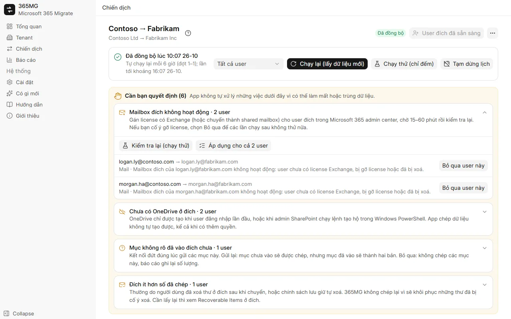

Microsoft 365 và Google Workspace
Kết nối bao nhiêu tenant Microsoft 365 và Google Workspace cũng được, rồi chép theo mọi chiều: Microsoft ↔ Google, Microsoft → Microsoft, Google → Google.
Di chuyển Microsoft 365 ↔ Google Workspace
365MG chép mail, danh bạ, lịch, OneDrive và Google Drive, shared drive và nhóm giữa Microsoft 365 và Google Workspace theo mọi chiều, ngay trên máy Windows của bạn. Mỗi mục đều được ghi nhật ký nên chạy lại không bao giờ trùng, và app dừng lại hỏi bạn mỗi khi một lựa chọn có thể làm mất hoặc trùng dữ liệu.

Kết nối bao nhiêu tenant Microsoft 365 và Google Workspace cũng được, rồi chép theo mọi chiều: Microsoft ↔ Google, Microsoft → Microsoft, Google → Google.
Lọc và chọn user nguồn, tự khớp với user đích, gán domain đích và license hàng loạt, tạo user còn thiếu.
Xuất và nhập từng mục qua Exchange mailbox API theo từng thư mục, có nhật ký từng mục nên lần chạy bị dừng sẽ chép tiếp đúng chỗ.
Chép file và thư mục, giữ ngày tạo và ngày sửa, kiểm tra từng file bằng quickXorHash, tải file lớn theo từng đoạn 64 MB có thể chạy tiếp.
Tạo lại danh sách phân phối và nhóm có mail thành nhóm Microsoft 365 cùng alias, kèm thành viên và chủ nhóm.
Chia user thành nhiều đợt, đếm trước những gì sẽ chép mà không ghi gì, rồi chép thật và đồng bộ định kỳ đến ngày chuyển hẳn.
Mailbox hay OneDrive đích chưa có, user đích bị tạo lại, mục không rõ kết quả: mỗi việc vào danh sách "Cần bạn quyết định" kèm nút xử lý.
Số liệu nguồn và đã chép theo từng user và tổng, user cần chú ý, nhóm, ghi chú; xuất một trang HTML độc lập hoặc CSV.
English, Tiếng Việt, 简体中文, 한국어, 日本語, Deutsch, Русский, हिन्दी và العربية (viết từ phải sang trái).
Mỗi lớp bảo vệ đều xuất phát từ một sự cố khi chuyển một công ty 350 người: mailbox bị gỡ license giữa chừng, OneDrive đích chưa được tạo, mất kết nối đúng lúc đang gửi.

365MG do tác giả trực tiếp phân phối. Hãy liên hệ để nhận bộ cài, xem demo hoặc được hỗ trợ khi chuyển.